Des fonctionnalités de préprocessing ont été incluses dans PlantUML et sont disponibles pour tous les diagrammes. Ces fonctionnalités sont assez proches du préprocesseur du language C, à la différence pour le caractère # a été remplacé par le point d'exclamation !. Although this is not mandatory, we highly suggest that variable names start with a $. There are three types of data: - Integer number(int);
- String(str) - these must be surrounded by single quote or double quote;
- JSON(JSON) - these must be surrounded by curly brackets.
(for JSON variable definition and usage, see more details on Preprocessing-JSON page) Variables created outside function are global, that is you can access them from everywhere (including from functions). You can emphasize this by using the optional global keyword when defining a variable. 🎉 Copied! 
 | @startuml
!$a = 42
!$ab = "foo1"
!$cd = "foo2"
!$ef = $ab + $cd
!$foo = { "name": "John", "age" : 30 }
Alice -> Bob : $a
Alice -> Bob : $ab
Alice -> Bob : $cd
Alice -> Bob : $ef
Alice -> Bob : Do you know **$foo.name** ?
@enduml
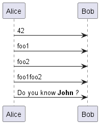 |
You can also assign a value to a variable, only if it is not already defined, with the syntax: !$a ?= "foo" 🎉 Copied!
| @startuml
Alice -> Bob : 1. **$name** should be empty
!$name ?= "Charlie"
Alice -> Bob : 2. **$name** should be Charlie
!$name = "David"
Alice -> Bob : 3. **$name** should be David
!$name ?= "Ethan"
Alice -> Bob : 4. **$name** should be David
@enduml
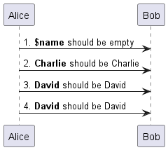 |
Boolean representation [0 is false] There is not real boolean type, but PlantUML use this integer convention: - Integer
0 means false - and any non-null number (as
1) or any string (as "1", or even "0") means true.
[Ref. QA-9702]Boolean operation and operator [&&, ||, ()] You can use boolean expression, in the test, with : - parenthesis
(); - and operator
&&; - or operator
||.
(See next example, within if test.)Boolean builtin functions [%false(), %true(), %not(<exp>)] For convenience, you can use those boolean builtin functions: %false()%true()%not(<exp>)
[See also Builtin functions]- You can use expression in condition.
- else and elseif are also implemented
🎉 Copied!
| @startuml
!$a = 10
!$ijk = "foo"
Alice -> Bob : A
!if ($ijk == "foo") && ($a+10>=4)
Alice -> Bob : yes
!else
Alice -> Bob : This should not appear
!endif
Alice -> Bob : B
@enduml
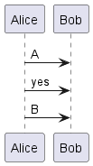 |
You can use !while and !endwhile keywords to have repeat loops. While loop (on Activity diagram) 🎉 Copied!
| @startuml
!procedure $foo($arg)
:procedure start;
!while $arg!=0
!$i=3
#palegreen:arg=$arg;
!while $i!=0
:arg=$arg and i=$i;
!$i = $i - 1
!endwhile
!$arg = $arg - 1
!endwhile
:procedure end;
!endprocedure
start
$foo(2)
end
@enduml
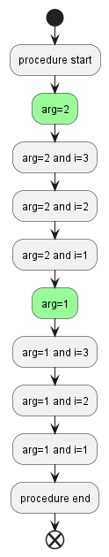 |
[Adapted from QA-10838]While loop (on Mindmap diagram) 🎉 Copied!
| @startmindmap
!procedure $foo($arg)
!while $arg!=0
!$i=3
**[#palegreen] arg = $arg
!while $i!=0
*** i = $i
!$i = $i - 1
!endwhile
!$arg = $arg - 1
!endwhile
!endprocedure
*:While
Loop;
$foo(2)
@endmindmap
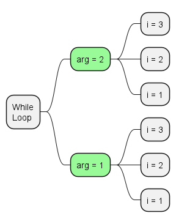 |
While loop (on Component/Deployment diagram) 🎉 Copied!
| @startuml
!procedure $foo($arg)
!while $arg!=0
[Component $arg] as $arg
!$arg = $arg - 1
!endwhile
!endprocedure
$foo(4)
1->2
3-->4
@enduml
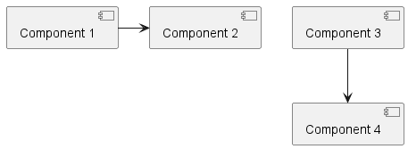 |
[Ref. QA-14088]- Procedure names should start with a
$ - Argument names should start with a
$ - Procedures can call other procedures
Example: 🎉 Copied!
| @startuml
!procedure $msg($source, $destination)
$source --> $destination
!endprocedure
!procedure $init_class($name)
class $name {
$addCommonMethod()
}
!endprocedure
!procedure $addCommonMethod()
toString()
hashCode()
!endprocedure
$init_class("foo1")
$init_class("foo2")
$msg("foo1", "foo2")
@enduml
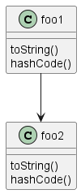 |
Variables defined in procedures are local. It means that the variable is destroyed when the procedure ends. A return function does not output any text. It just define a function that you can call: - directly in variable definition or in diagram text
- from other return functions
- from procedures
- Function name should start with a
$ - Argument names should start with a
$
🎉 Copied!
| @startuml
!function $double($a)
!return $a + $a
!endfunction
Alice -> Bob : The double of 3 is $double(3)
@enduml
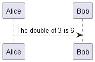 |
It is possible to shorten simple function definition in one line: 🎉 Copied!
| @startuml
!function $double($a) !return $a + $a
Alice -> Bob : The double of 3 is $double(3)
Alice -> Bob : $double("This work also for strings.")
@enduml
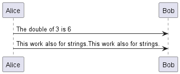 |
As in procedure (void function), variable are local by default (they are destroyed when the function is exited). However, you can access to global variables from function. However, you can use the local keyword to create a local variable if ever a global variable exists with the same name. 🎉 Copied!
| @startuml
!function $dummy()
!local $ijk = "local"
!return "Alice -> Bob : " + $ijk
!endfunction
!global $ijk = "foo"
Alice -> Bob : $ijk
$dummy()
Alice -> Bob : $ijk
@enduml
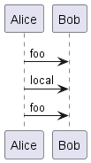 |
In both procedure and return functions, you can define default values for arguments. 🎉 Copied!
| @startuml
!function $inc($value, $step=1)
!return $value + $step
!endfunction
Alice -> Bob : Just one more $inc(3)
Alice -> Bob : Add two to three : $inc(3, 2)
@enduml
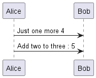 |
Only arguments at the end of the parameter list can have default values. 🎉 Copied!
| @startuml
!procedure defaulttest($x, $y="DefaultY", $z="DefaultZ")
note over Alice
x = $x
y = $y
z = $z
end note
!endprocedure
defaulttest(1, 2, 3)
defaulttest(1, 2)
defaulttest(1)
@enduml
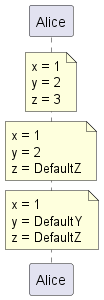 |
By default, you have to put quotes when you call a function or a procedure. It is possible to use the unquoted keyword to indicate that a function or a procedure does not require quotes for its arguments. 🎉 Copied!
| @startuml
!unquoted function id($text1, $text2="FOO") !return $text1 + $text2
alice -> bob : id(aa)
alice -> bob : id(ab,cd)
@enduml
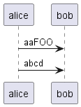 |
Like in Python, you can use keywords arguments : 🎉 Copied!
| @startuml
!unquoted procedure $element($alias, $description="", $label="", $technology="", $size=12, $colour="green")
rectangle $alias as "
<color:$colour><<$alias>></color>
==$label==
//<size:$size>[$technology]</size>//
$description"
!endprocedure
$element(myalias, "This description is %newline()on several lines", $size=10, $technology="Java")
@enduml
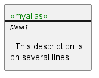 |
Use the !include directive to include file in your diagram. Using URL, you can also include file from Internet/Intranet. Protected Internet resources can also be accessed, this is described in URL authentication. Imagine you have the very same class that appears in many diagrams. Instead of duplicating the description of this class, you can define a file that contains the description. 🎉 Copied!
| @startuml
interface List
List : int size()
List : void clear()
List <|.. ArrayList
@enduml
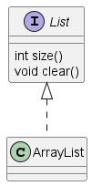 |
File List.iuml
interface List
List : int size()
List : void clear()
The file List.iuml can be included in many diagrams, and any modification in this file will change all diagrams that include it. You can also put several @startuml/@enduml text block in an included file and then specify which block you want to include adding !0 where 0 is the block number. The !0 notation denotes the first diagram. For example, if you use !include foo.txt!1, the second @startuml/@enduml block within foo.txt will be included. You can also put an id to some @startuml/@enduml text block in an included file using @startuml(id=MY_OWN_ID) syntax and then include the block adding !MY_OWN_ID when including the file, so using something like !include foo.txt!MY_OWN_ID. By default, a file can only be included once. You can use !include_many instead of !include if you want to include some file several times. Note that there is also a !include_once directive that raises an error if a file is included several times. You can also use !startsub NAME and !endsub to indicate sections of text to include from other files using !includesub. For example: file1.puml:
@startuml
A -> A : stuff1
!startsub BASIC
B -> B : stuff2
!endsub
C -> C : stuff3
!startsub BASIC
D -> D : stuff4
!endsub
@enduml
file1.puml would be rendered exactly as if it were:
@startuml
A -> A : stuff1
B -> B : stuff2
C -> C : stuff3
D -> D : stuff4
@enduml
However, this would also allow you to have another file2.puml like this: file2.puml
@startuml
title this contains only B and D
!includesub file1.puml!BASIC
@enduml
This file would be rendered exactly as if:
@startuml
title this contains only B and D
B -> B : stuff2
D -> D : stuff4
@enduml
Some functions are defined by default. Their name starts by %| Name | Description | Example | Return | %chr | Return a character from a give Unicode value | %chr(65) | A | %darken | Return a darken color of a given color with some ratio | %darken("red", 20) | #CC0000 | %date | Retrieve current date. You can provide an optional format for the date | %date("yyyy.MM.dd' at 'HH:mm") | current date | | You can provide another optional time (on epoch format) | %date("YYYY-MM-dd", %now() + 1*24*3600) | tomorrow date | %dec2hex | Return the hexadecimal string (String) of a decimal value (Int) | %dec2hex(12) | c | %dirpath | Retrieve current dirpath | %dirpath() | current path | %feature | Check if some feature is available in the current PlantUML running version | %feature("theme") | true | %false | Return always false | %false() | false | %file_exists | Check if a file exists on the local filesystem | %file_exists("c:/foo/dummy.txt") | true if the file exists | %filename | Retrieve current filename | %filename() | current filename | %function_exists | Check if a function exists | %function_exists("$some_function") | true if the function has been defined | %get_variable_value | Retrieve some variable value | %get_variable_value("$my_variable") | the value of the variable | %getenv | Retrieve environment variable value | %getenv("OS") | the value of OS variable | %hex2dec | Return the decimal value (Int) of a hexadecimal string (String) | %hex2dec("d") or %hex2dec(d) | 13 | %hsl_color | Return the RGBa color from a HSL color %hsl_color(h, s, l) or %hsl_color(h, s, l, a) | %hsl_color(120, 100, 50) | #00FF00 | %intval | Convert a String to Int | %intval("42") | 42 | %is_dark | Check if a color is a dark one | %is_dark("#000000") | true | %is_light | Check if a color is a light one | %is_light("#000000") | false | %lighten | Return a lighten color of a given color with some ratio | %lighten("red", 20) | #CC3333 | %load_json | Load JSON data from local file or external URL | %load_json("http://localhost:7778/management/health") | JSON data | %lower | Return a lowercase string | %lower("Hello") | hello in that example | %newline | Return a newline | %newline() | a newline | %not | Return the logical negation of an expression | %not(2+2==4) | false in that example | %now | Return the current epoch time | %now() | 1685547132 in that example (when updating the doc.) | %ord | Return a Unicode value from a given character | %ord("A") | 65 | %lighten | Return a lighten color of a given color with some ratio | %lighten("red", 20) | #CC3333 | %reverse_color | Reverse a color using RGB | %reverse_color("#FF7700") | #0088FF | %reverse_hsluv_color | Reverse a color using HSLuv | %reverse_hsluv_color("#FF7700") | #602800 | %set_variable_value | Set a global variable | %set_variable_value("$my_variable", "some_value") | an empty string | %size | Return the size of any string or JSON structure | %size("foo") | 3 in the example | %string | Convert an expression to String | %string(1 + 2) | 3 in the example | %strlen | Calculate the length of a String | %strlen("foo") | 3 in the example | %strpos | Search a substring in a string | %strpos("abcdef", "ef") | 4 (position of ef) | %substr | Extract a substring. Takes 2 or 3 arguments | %substr("abcdef", 3, 2) | "de" in the example | %true | Return always true | %true() | true | %upper | Return an uppercase string | %upper("Hello") | HELLO in that example | %variable_exists | Check if a variable exists | %variable_exists("$my_variable") | true if the variable has been defined exists | %version | Return PlantUML current version | %version() | 1.2020.8 for example |
You can use !log to add some log output when generating the diagram. This has no impact at all on the diagram itself. However, those logs are printed in the command line's output stream. This could be useful for debug purpose. 🎉 Copied!
| @startuml
!function bold($text)
!$result = "<b>"+ $text +"</b>"
!log Calling bold function with $text. The result is $result
!return $result
!endfunction
Alice -> Bob : This is bold("bold")
Alice -> Bob : This is bold("a second call")
@enduml
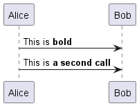 |
You can use !dump_memory to dump the full content of the memory when generating the diagram. An optional string can be put after !dump_memory. This has no impact at all on the diagram itself. This could be useful for debug purpose. 🎉 Copied!
| @startuml
!function $inc($string)
!$val = %intval($string)
!log value is $val
!dump_memory
!return $val+1
!endfunction
Alice -> Bob : 4 $inc("3")
!unused = "foo"
!dump_memory EOF
@enduml
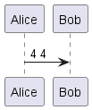 |
You can put assertions in your diagram. 🎉 Copied!
| @startuml
Alice -> Bob : Hello
!assert %strpos("abcdef", "cd")==3 : "This always fails"
@enduml
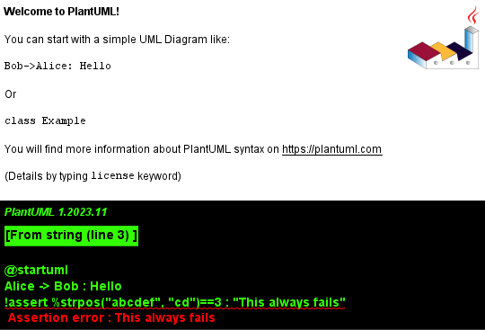 |
It's possible to package a set of included files into a single .zip or .jar archive. This single zip/jar can then be imported into your diagram using !import directive. Once the library has been imported, you can !include file from this single zip/jar. Example:
@startuml
!import /path/to/customLibrary.zip
' This just adds "customLibrary.zip" in the search path
!include myFolder/myFile.iuml
' Assuming that myFolder/myFile.iuml is located somewhere
' either inside "customLibrary.zip" or on the local filesystem
...
You can specify the java property plantuml.include.path in the command line. For example:
java -Dplantuml.include.path="c:/mydir" -jar plantuml.jar atest1.txt
Note the this -D option has to put before the -jar option. -D options after the -jar option will be used to define constants within plantuml preprocessor. It is possible to append text to a macro argument using the ## syntax. 🎉 Copied!
| @startuml
!unquoted procedure COMP_TEXTGENCOMP(name)
[name] << Comp >>
interface Ifc << IfcType >> AS name##Ifc
name##Ifc - [name]
!endprocedure
COMP_TEXTGENCOMP(dummy)
@enduml
|
You can dynamically invoke a procedure using the special %invoke_procedure() procedure. This procedure takes as first argument the name of the actual procedure to be called. The optional following arguments are copied to the called procedure. For example, you can have: 🎉 Copied!
| @startuml
!procedure $go()
Bob -> Alice : hello
!endprocedure
!$wrapper = "$go"
%invoke_procedure($wrapper)
@enduml
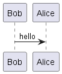 |
🎉 Copied!
| @startuml
!procedure $go($txt)
Bob -> Alice : $txt
!endprocedure
%invoke_procedure("$go", "hello from Bob...")
@enduml
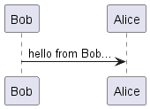 |
For return functions, you can use the corresponding special function %call_user_func() : 🎉 Copied!
| @startuml
!function bold($text)
!return "<b>"+ $text +"</b>"
!endfunction
Alice -> Bob : %call_user_func("bold", "Hello") there
@enduml
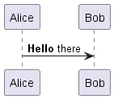 |
Evaluation of $a + $b depending of type of $a or $b 🎉 Copied!
| @startuml
title
<#LightBlue>|= |= $a |= $b |= <U+0025>string($a + $b)|
<#LightGray>| type | str | str | str (concatenation) |
| example |= "a" |= "b" |= %string("a" + "b") |
<#LightGray>| type | str | int | str (concatenation) |
| ex.|= "a" |= 2 |= %string("a" + 2) |
<#LightGray>| type | str | int | str (concatenation) |
| ex.|= 1 |= "b" |= %string(1 + "b") |
<#LightGray>| type | bool | str | str (concatenation) |
| ex.|= <U+0025>true() |= "b" |= %string(%true() + "b") |
<#LightGray>| type | str | bool | str (concatenation) |
| ex.|= "a" |= <U+0025>false() |= %string("a" + %false()) |
<#LightGray>| type | int | int | int (addition of int) |
| ex.|= 1 |= 2 |= %string(1 + 2) |
<#LightGray>| type | bool | int | int (addition) |
| ex.|= <U+0025>true() |= 2 |= %string(%true() + 2) |
<#LightGray>| type | int | bool | int (addition) |
| ex.|= 1 |= <U+0025>false() |= %string(1 + %false()) |
<#LightGray>| type | int | int | int (addition) |
| ex.|= 1 |= <U+0025>intval("2") |= %string(1 + %intval("2")) |
end title
@enduml
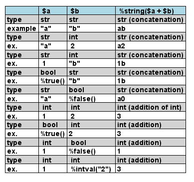 |
You can extend the functionality of the current Preprocessing with JSON Preprocessing features: - JSON Variable definition
- Access to JSON data
- Loop over JSON array
(See more details on Preprocessing-JSON page) Use the !theme directive to change the default theme of your diagram. 🎉 Copied!
| @startuml
!theme spacelab
class Example {
Theme spacelab
}
@enduml
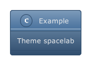 |
You will find more information on the dedicated page. The current preprocessor is an update from some legacy preprocessor. Even if some legacy features are still supported with the actual preprocessor, you should not use them any more (they might be removed in some long term future). - You should not use
!define and !definelong anymore. Use !function, !procedure or variable definition instead. !define should be replaced by return !function!definelong should be replaced by !procedure.
!include now allows multiple inclusions : you don't have to use !include_many anymore!include now accepts a URL, so you don't need !includeurl- Some features (like
%date%) have been replaced by builtin functions (for example %date()) - When calling a legacy
!definelong macro with no arguments, you do have to use parenthesis. You have to use my_own_definelong() because my_own_definelong without parenthesis is not recognized by the new preprocessor.
Please contact us if you have any issues. 🎉 Copied!
| @startmindmap
!$list = %splitstr("abc~def~ghi", "~")
* root
!foreach $item in $list
** $item
!endfor
@endmindmap
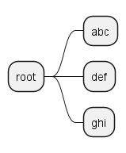 |
[Ref. QA-15374] | - Variable definition [=, ?=]
- Boolean expression
- Conditions [!if, !else, !elseif, !endif]
- While loop [!while, !endwhile]
- Procedure [!procedure, !endprocedure]
- Return function [!function, !endfunction]
- Default argument value
- Unquoted procedure or function [!unquoted]
- Keywords arguments
- Including files or URL [!include, !include\_many, !include\_once]
- Including Subpart [!startsub, !endsub, !includesub]
- Builtin functions [%]
- Logging [!log]
- Memory dump [!dump\_memory]
- Assertion [!assert]
- Building custom library [!import, !include]
- Search path
- Argument concatenation [##]
- Dynamic invocation [`+%invoke_procedure()+`, `+%call_user_func()+`]
- Evaluation of addition depending of data types [+]
- Preprocessing JSON
- Including theme [!theme]
- Migration notes
- `+%Splitstr+` builtin function
|